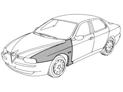
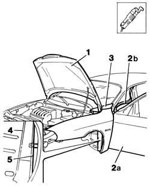
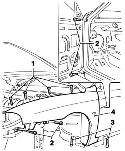
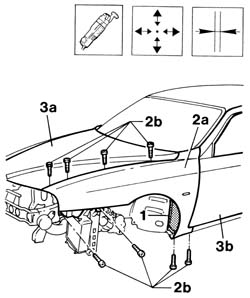
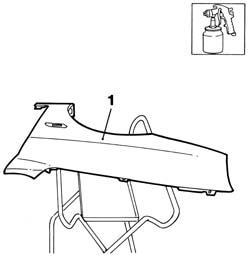
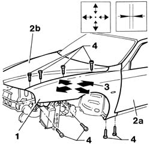
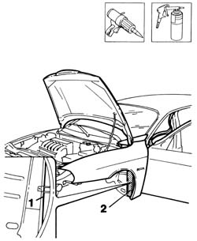

7210E18 R.R. FRONT WING
- Path
- Procedures > 72 PANELS AND FRAME > 7210 REMOVING REFITTING > 7210E external parts > 7210E18 R.R. FRONT WING
- Kind
- repair procedure (removal / refitting; the operation number is the code)
- Applies to
- all engines; all production periods
- Interactive page
- https://sloeber94.github.io/elrnDB-a156/en/#/3239045
Applies to: all engines; all production periods
 Removing
Removing
 Refitting
RefittingCheck if any of the connected parts are deformed by checking body alignment dimensions. Use appropriate measurement tools (reference rigs, templates or gauges).
Straighten the body if necessary.

Applies to: all engines; all production periods
1. Lift the bonnet lid.
2. Open front door (2a) and prise out door drip channel seal (2b) to gain access to the wing retaining nut.
3. Protect the trim grille beneath the windscreen using adhesive tape.
4. Remove the PVC treatment between front pillar and wing using a vibrating cutter and appropriate blade.
5. Heat and then use an appropriate blade to cut the sealant between front pillar and wing.

Applies to: all engines; all production periods
1. Unscrew the upper wing retaining bolts.
2. Unscrew the wing side retaining bolts.
3. Unscrew the lower wing retaining bolts.
4. Remove the wing from the car.

Applies to: all engines; all production periods
Refitting
Removing1. Clean off residues of old sealant and PVC using a vibrating cutter and appropriate blade.
2. Position the wing (2a) on the car and secure provisionally using the retaining bolts (2b).
3. Lower the bonnet lid (3a) and close the front door (3b). Check the door is aligned and that the gap around the edge is even.

Applies to: all engines; all production periods
1. Paint the wing in accordance with the specified procedure.

Applies to: all engines; all production periods
1. Position the wing on the car and screw in the retaining bolts without tightening.
2. Align the wing and check the edges between wing and door (2a) and bonnet lid (2b).
3. Permitted wing adjustment movements are indicated by arrows.
4. Fully tighten the wing retaining bolts.

Applies to: all engines; all production periods
1. Apply sealant to the area indicated (use the specified cycle).
2. Reapply PVC treatment to the areas indicated (use the specified cycle).
